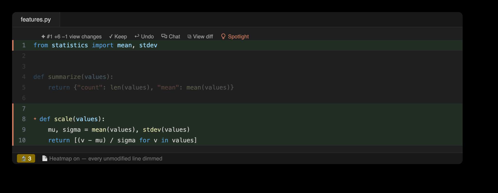

The Overview panel
The flagship 0.8.0 surface: a master-detail panel in the bottom Claude Observatory dock. The left nav shows who is working and on what: Fleet lists every running agent across the repo's git worktrees, each unfolding to its nested subagents; Workflows lists each multi-agent run; and Tasks shows the session's numbered task list (Claude's TaskCreate/TaskUpdate tasks) — each task is joined to its chapter, so rows carry live edit counts, and a task-planned session gets real chapters with per-task Accept / Reject / Clear. Selecting one fills the right pane with its change map: a ribbon of named chapters built from Claude's own to-dos (click a chapter to scope the bulk actions to it), a one-row module proportion strip (click a segment to filter), and a file ledger ranked by churn, its ±line bars coloured by review status, worst-unreviewed-wins. The title bar carries a session selector, the combined review nav bar, and bulk actions (Accept All · Revert All · Clear Resolved · Refresh). Every rollup is computed once in core and rendered as given by both editors; from the shell: claude-observatory changemap --json.


A live list of running agents
The Fleet tab lists every running Claude session in one live nav, including sessions in separate git worktrees of the same repo. Each agent unfolds to its nested subagents (agentType, description, phase, current task & to-dos, ±lines, and a chat button); an Active only toggle narrows the list, Clear completed dismisses rather than deletes, and a cross-agent conflicts strip flags any file two or more agents are touching. Selecting a row fills the detail pane with that agent's change map, and a live transcript watcher keeps the view current the moment a tool runs — not just on edits.
Multi-agent workflow runs
Claude Code's deterministic multi-agent orchestration produces workflow runs — scripted fan-outs of agents that would otherwise be invisible. The observatory tracks them one level above subagents, mining each run from its own transcripts and state file at zero tokens: an informative name; a running or done state, freshness-gated so an interrupted run that never wrote completed is not shown running; per-phase progress groups; and per-agent tokens · time · edits, each row carrying an activity sparkline styled like the Fleet rows. Selecting one fills the detail pane with that run's change map; from the shell, claude-observatory multitask --json and changemap --json.
Multitasking across worktrees
One row per running agent shows a live phase (working · awaiting-input · awaiting-permission · idle · done; heuristic phases are marked ~ and inferred from inactivity, never asserted), its worktree and branch, an activity sparkline, ±lines, tokens · time, risk, and a file-collision strip that flags any file two agents are touching, even when one of them is idle. Claude Code keys its sessions by working directory, so two worktrees of one repo are otherwise tracked separately; the observatory correlates them by reading each worktree's .git pointer files (plain-file reads, never the git binary) and unions them into one fleet. Tracking is read-only and path-only: no file contents cross between agents. From the shell: claude-observatory multitask, and claude-observatory siblings (alias fleet) — an agent-facing digest an agent can call mid-run to avoid overlapping a sibling's work.

Review organized by Claude's to-dos
Claude plans its work as to-dos, and the observatory turns that list into the review's structure. Every edit belongs to a named chapter. Chapters are total: work done outside any to-do lands in a synthesized session chapter titled from the session's own goal, never a generic bucket. Accepting, rejecting, or clearing a chapter acts WYSIWYG on exactly the edits the chapter row shows, so accepting a chapter leaves nothing unreviewed behind; reverts stay conflict-guarded per edit. claude-observatory tasklog is the cross-agent task log: one row per task, unioned across every worktree sibling and subagent that contributed to it.

Review directly in the editor
A gutter star marks each Claude edit, and a whole-line highlight (green over added lines, red over removed, with a matching change bar down the gutter) colors exactly what moved. Clicking view changes opens the diff inline, in git's own colors, with Claude's reasoning and Keep / Undo / Chat / View diff alongside.

A dedicated diff for each edit
A single change opens as its own diff tab, and Prev / Next in the title bar steps through the file's edits without losing your place.

Surgical undo
A position-anchored 3-way merge reverts a single change while later edits to the same file are preserved. File History lists the active file's edits, newest first, and follows the editor as you switch tabs.

A change feed with Claude's reasoning
A session recap sits on top, followed by a coalesced change feed: files ordered by most-recent activity, with adjacent same-file edits collapsed into a single ×N run so a busy session stays legible. Each edit carries its reasoning, parsed from the transcript at zero extra tokens. Every row also holds the observatory's memory of that file — its cross-session accept/revert history — so files that are reverted often are flagged.

A timeline of every tool call
A typed timeline mined from the transcript at zero tokens: every read, grep, shell command, web fetch, subagent spawn, and to-do or task-list update Claude made this session, each correlated with its result. The view leads with the live cross-agent file conflicts (moved here from the Overview — click one to open the contested file). The Actions view lives in the sidebar — the Claude Edits activity-bar view alongside Edits, Diffs, and File History, and a pane in the JetBrains tool window — with its category groups collapsed by default. The view stays curated (high-signal categories, with a Show all toggle for reads, searches, and meta), errors always surface, and edit rows link directly to their review. From the shell: claude-observatory actions (alias trace), a human-readable feed or --json, filtered by --category, --errors, --limit, and --all.
Per-subagent timelines
When Claude spawns a subagent (the Task / Agent tool), its work is tracked rather than lost in a side file. A Subagents node in the Actions view lists each one, expandable into its own reads, edits, and shell calls, with per-subagent metrics (duration, tokens, tool calls, status) mined from the subagent transcript at zero tokens and correlated to the spawn. From the shell: claude-observatory subagents (alias agents), a human-readable feed or --json.
Risk and egress audits
Both audits are mined from the same action timeline and cost no extra Claude tokens. Risk flags shell commands that can cause damage — data loss (rm -rf, git reset --hard, force push), remote code (curl | sh), privilege escalation (sudo), or credential-file access — as high / med badges on those rows in Actions, plus claude-observatory risk. Egress lists what the session touched off-machine: WebFetch hosts, MCP servers, and network shell commands, each marked remote or unknown, pinned as an Egress node atop the Actions view and available as claude-observatory egress. Both are purely additive: no change to the store or its format.
Context-preloaded chat prompts
A chat prompt about any edit, action, subagent, or task can be assembled with one click, context included: the target, Claude's own reasoning, the before/after diff or the command and its result, and the task or subagent framing — copied to your clipboard for your own Claude session. The observatory never calls a model, so this costs zero extra tokens. From the shell: claude-observatory chat-context --json.

Session metrics
One readout summarizes what the session cost and did: lines added and removed, tool-call and error counts, per-subagent duration and tokens, and tool latency (median / p95 / max, from each call's tool_use → tool_result gap). All values are derived at zero tokens: claude-observatory metrics, human-readable or --json.
Progress, tokens, and usage
A top bar names the active Claude Code session; searching edits lives on the review nav bar. Below it, a live review scoreboard tracks pending (clicking the count jumps to the oldest edit awaiting review), accepted, and reverted, with a progress bar, a token step-line plot over Today / 7 days / 30 days, and context plus 5h / week plan-usage bars.

Review controls on four surfaces
One review bar appears on four surfaces: the status bar, the editor's title bar, a floating bubble over the live edit, and the Overview panel's title bar. Diff n/m steps through the open file's pending edits, File n/m steps across every file that has them, and the counters follow the active editor. The bar is two-tier: the File axis plus Spotlight and Search appear whenever anything is pending, while the Diff axis and the per-edit Keep / Undo and Accept / Reject File appear only when the open file has edits. The clear button is scoped per surface — file-scoped Clear File on the Overview title bar, session-wide Clear Resolved on the status bar. The ⌥⌘ shortcuts work throughout.
The Spotlight view
Spotlight dims every unmodified line so Claude's changes stand out. One toggle turns a heavily edited file into a focused view of exactly what moved.

Conflict handling
When an undo would overlap later changes, the observatory refuses rather than overwrite, and offers an explicit --force restore. Undo is anchored on line positions rather than fuzzy text, so it stays safe against duplicated content.

The built-in demo
claude-observatory demo replays a scripted session through the real pipeline (a genuine transcript, edits captured by the same hook logic, a subagent with its own timeline, and a workflow run) inside an isolated demo session and an observatory-demo/ folder. Chapters, fleet rows, and observations fill in live in the Overview, and the review works normally: Accept and Reject act on real records. Nothing leaks — a fully reviewed demo session clears its own store, and demo --clean removes every trace. The same scenario is clickable in the browser on the interactive demo page.

Review from the terminal
The claude-observatory CLI is a first-class front-end over the same store: list, diff, keep, and surgically undo from the terminal. Its --json surface is what both editors build on.

The same tool in both editors
VS Code and JetBrains render identical review surfaces over one backend: icon-only tabs, inline review, and the bottom dashboards. Decisions made in one appear in the other.